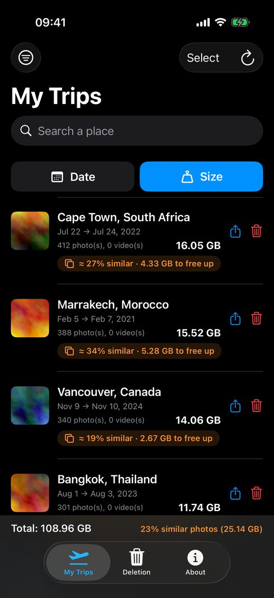
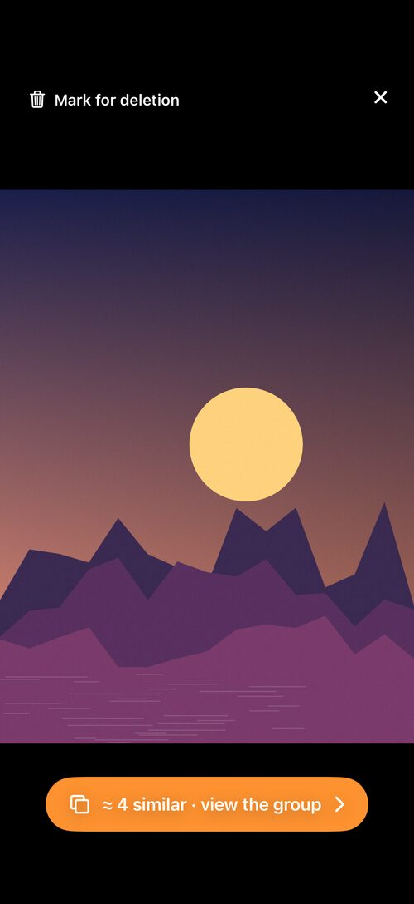
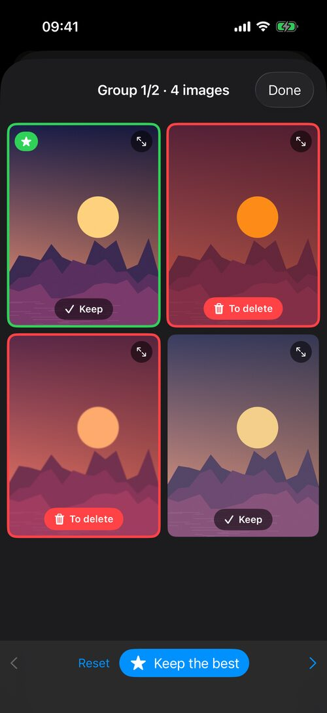
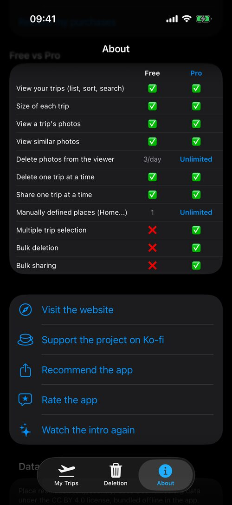

Finally, an easy way to clear out old trips
TripSweep groups your photos and videos by trip, shows what's taking up space and how much of it is near-duplicates, then lets you keep the best shot and delete the rest — without ever sending your data anywhere.
→ Also check out PhotoCull for Mac, the desktop app that sorts your photos

A look at the app



What the app does
Automatic grouping by trip
Your photos and videos are grouped by trip — factoring in both time and location, so two different destinations never get mixed up. Trips are stored on your iPhone: the list appears instantly at launch, then refreshes in the background.
Similar photos, found for you
TripSweep analyzes your photos in the background, on your iPhone, with Apple's Vision framework. Each trip shows how much of it is near-duplicates (“≈ 27% similar · 4.3 GB to free up”) — a good reason to come back and sort.
Compare and pick the best
Open a group of similar photos: portraits side by side, landscapes stacked, never cropped. A best shot is suggested (sharpness, Apple's aesthetic score, faces), bursts are grouped automatically, and your favorites are never marked for deletion.
The size that counts
Sort trips by date or by size with one big button. A footer shows the total weight of your photos and the share that is similar — to see at a glance where sorting pays off.
Free to browse, easy to sort
Tapping a trip opens the viewer — free. Mark any photo for deletion, similar or not, from the grid or in full screen; a big button jumps straight to the group when a photo has similar ones.
Delete without the guesswork
Always through “Recently Deleted”, never an immediate permanent delete. The free version includes 3 deletions a day from the viewer; Pro removes the limit.
Back it up, or send it to someone who was there
Export an entire trip to your Mac or Files before you delete it, or share it directly (AirDrop, Files...) with friends and family — nothing gets lost for good.
Custom places
Define your own places (Home, Work...) and exclude them from the list to keep only real trips.
100% offline
No photo or location ever leaves your iPhone. Place recognition and similar-photo detection both run entirely on the device, with no connection, account, or third-party service.
Available in 5 languages
English, French, Italian, German, Spanish — the app automatically adapts to your iPhone's language, in portrait or landscape.
Your privacy, taken seriously
TripSweep never collects, sends, or shares any of your photos, videos, or location data. All processing — including place recognition — happens locally on your iPhone.
Read the full privacy policy